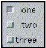

java.lang.Object
|
+----java.awt.Component
|
+----java.awt.Checkbox
public class Checkbox
extends Component
implements ItemSelectable
A check box is a graphical component that can be in either an "on" (true) or "off" (false) state. Clicking on a check box changes its state from "on" to "off," or from "off" to "on."
The following code example creates a set of check boxes in a grid layout:
setLayout(new GridLayout(3, 1));
add(new Checkbox("one", null, true));
add(new Checkbox("two"));
add(new Checkbox("three"));
This image depicts the check boxes and grid layout created by this code example:

The button labeled one is in the "on" state, and the other two are in the "off" state. In this example, which uses the GridLayout class, the states of the three check boxes are set independently.
Alternatively, several check boxes can be grouped together under the control of a single object, using the CheckboxGroup class. In a check box group, at most one button can be in the "on" state at any given time. Clicking on a check box to turn it on forces any other check box in the same group that is on into the "off" state.